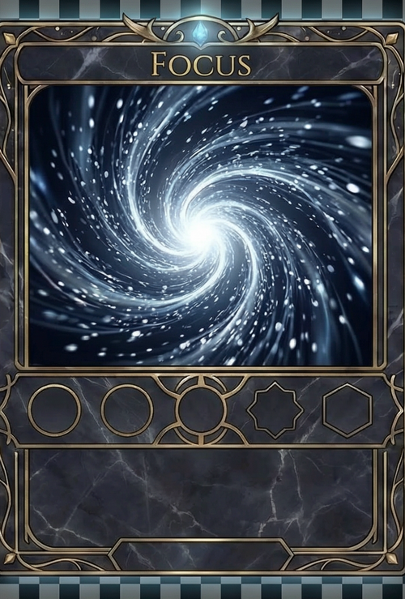

Game concepts with systems depth
Project Sanctuary/cardlyB and Jianghu Ascendant show two production paths: a Godot 4 .NET roguelike card battler and a browser-based wuxia deckbuilder with a live Three.js battlefield.
Playable games / AI platforms / agent infrastructure
A GitHub-first portfolio of fundable game concepts, full-stack AI products, and developer harnesses for agent-heavy production. The through line is practical systems work: playable surfaces, real pipelines, and tools that make iteration measurable.
Why this portfolio exists
Project Sanctuary/cardlyB and Jianghu Ascendant show two production paths: a Godot 4 .NET roguelike card battler and a browser-based wuxia deckbuilder with a live Three.js battlefield.
LocalTelemetry, Game Studio Harness, and Claude PowerShell Hooks focus on making coding agents observable, coordinated, and useful during long-running local development.
AcePrepLabs expands the portfolio into applied AI learning: tutoring, practice tests, flashcards, analytics, mobile training, and question-bank tooling.
Curated highlights
Live browser game
Browser-based wuxia deckbuilding roguelike, playable now at jianghu-ascendant.pages.dev. The build combines a Three.js 3D battlefield with Qi-based martial combat, four martial schools, relics, potions, cultivation progression, and bilingual Chinese / English presentation.


Flagship game project
A narrative-first, anime-styled, party roguelike card battler built in Godot 4 .NET with C#. The local workspace includes a playable implementation, full design bible, generated art assets, BGM/SFX pipelines, mobile planning docs, and QA harness work.
Full-stack AI education platform
Applied AI SAT prep and training ecosystem spanning a web platform, mobile corporate training app, and College Board question-bank tooling. The work demonstrates product breadth: tutoring flows, assessment engines, analytics, mobile delivery, and automation.
Interactive browser playground for physics and equation-driven canvas animations, built as a fast visual prototyping surface.
Windows 11 notification hooks for Claude Code, focused on making long-running local coding sessions easier to monitor.
Job-description-driven JSON Resume generator with Python models, validation, prompts, and a lightweight frontend.
NLP project exploring comment ranking and generation using sentiment, co-occurrence features, Markov chains, and recurrent models.
Clustering experiments across many benchmark datasets, with result outputs and analysis scripts for comparing behavior across domains.
Low-level C exercises around memory behavior and exploit mechanics, useful as evidence of systems-level fundamentals.
Harness ecosystem
AI agent telemetry harness
Local workbench that ingests Claude Code and Codex sessions into SQLite, then exposes the data through Python/FastAPI, a CLI, and a REST API. The goal is source-of-truth telemetry for agent behavior, session replay, and development observability.
Pre-production AI game studio
AI game development framework with 11 autonomous agent departments, Dolt-backed shared memory, and Bash/Python/Claude Code orchestration. It turns game pre-production into coordinated departments rather than one-off prompts.
Build pattern
Specs define the design contract, data files drive runtime behavior, engines present the experience, and QA scripts close the loop across both Godot and browser-native builds.
This portfolio shows more than isolated demos. It shows a builder who can move from research to product to game implementation, while keeping scope, production constraints, and technical proof visible.
GitHub first
The public GitHub account is the main call to action. It surfaces playable game builds, agent tooling, AI workflow projects, edtech prototypes, and the longer technical history behind the portfolio.